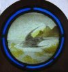

Velvet Flyer Velvet Flyer
The trophy presented to the fastest man at the Mole Valley club
championship, contested annually at a District event. Originally run
over the longest available course, but in recent years a Blue course has
been chosen to allow more Moles to join in. Awarded at
the Mole Dinner |
2012
Rob Hardwick
2011
Ian Ditchfield
2010
Ian Ditchfield
2009
Keith Masson
2008
Keith Masson
2007
Ian Ditchfield
2006 Ian Ditchfield
2005 Tony Burton
2004 Tony Burton
2003 Tony Burton
2002 Tony Burton
2001 Graham Gristwood
2000 Tony Burton
1999 Tony Burton
1998 Tony Burton
|
1997
Tony Burton
1996
Tony Burton
1995
Tony Burton
1994 Tony Burton
1993 Tony Burton
1992 Tony Burton
1991 Tony Burton
1990 Tony Burton
1989 Martin Ward
1988 Tony Burton
1987 Tony Burton
1986 Tony Burton
1985 Mark Glaisher
1984 Tony Burton
1983 Tony Burton
1982 Mark Glaisher |
|
|
Molasses
The trophy presented to the fastest lady at the Mole Valley club
championship, contested annually at a District event. Originally run
over a Blue course, but in recent years a Green course has been chosen to
allow more Moles to join in. Awarded at the Mole Dinner |
2012
Alison Gourd
2011
Sandra Vogel
2010
Sandra Vogel
2009
Samantha Martin
2008
Shona Masson
2007
Sandra Vogel
2006 Sandra Vogel
2005 Sandra Vogel
2004 Julianna Grant
2003 Julianna Grant
2002 Sandra Vogel
2001 Jane Green
2000 Pauline Ward
1999 Pauline Ward
1998 Pauline Ward |
1997
Barbara Ottley
1996
Alice Horton
1995
Pauline Ward
1994 Pauline Ward
1993 Pauline Ward
1992 Pauline Ward
1991 Beryl Offley
1990 Jane Green
1989 Beryl Offley
1988 Beryl Offley
1987 Beryl Offley
1986 Beryl Offley
1985 Beryl Offley
1984 Margaret Stedman
1983 Beryl Offley |
|
|
 Club Handicap Club Handicap
A trophy contested annually at a South East Badge event and awarded to the Mole
Valley member who fares best in a handicapping system based on the running
speeds used in the South East League.
Combined with junior handicap
before 1983 |
2015 Keith Masson
2014 Pauline Ward
2013 Ian Ditchfield
2012 Keith Masson
2011
Keith Masson
2010
Nigel Bush
2009
Keith Masson
2008
Keith Masson
2007 Keith Masson
2006 Tony Burton
2005 Julianna Grant
2004 Ian Ditchfield
2003 Julianna Grant
2002 Graham Gristwood
2001 Graham Gristwood
2000 Pauline Ward
1999 Ted Glaisher
1998 Pauline Ward
1997 Eddie Whiston
1996 Mike Elliot
1995 Pauline Ward
|
1994
Margaret Stedman
1993
Eddie Whiston
1992
Mark Glaisher
1991 Ted Glaisher
1990 Pauline Ward
1989 Eddie Whiston
1988 Peter Burt
1987 Margaret Stedman
1986 Margaret Stedman
1985 Roy Whitehead
1984 Ted Glaisher
1983 Margaret Stedman
1982 Margaret Stedman/Peter Burt
1981 Peter Forrest
1980 Peter Forrest
1979 Margaret Stedman
1978 Evelyn Lear (junior)
1977 Elizabeth Brown
1976 Peter Forrest |
|
|
 Junior Flyer Junior Flyer
A trophy contested annually at a South East Badge event to the junior
(M/W18-) Mole Valley member who fares best in a handicapping system based
on the running speeds used in the South East League.
Combined with senior
handicap before 1983 |
2015
Nathan Judd
2014
No Juniors Competed
2013
No Juniors Competed
2012
Imogen Squire
2011
Thomas Martin
2010
Sanantha Martin
2009
Samantha Martin
2008
Shona Masson
2007
Alastair Masson
2006 Nicola Rowlett
2005 Nicola Rowlett
2004 Stephen Green
2003 Stephen Green
2002 Gavin Buckle
2001 Gavin Buckle
2000 Graham Gristwood
1999 Andrew Powell
1998 Andrew Powell
1997 Graham Gristwood
|
1996
Andrew Powell
1995 Alice Horton
1994 Alice Horton
1993 Tom Horton
1992 Andrew Powell
1991 Helen Ling
1990 Paul Gray
1989 Paul Whiston
1988 Mark Gray
1987 Alice Horton
1986 Angela Ward
1985 Keith Whiston
1984 Martin Ward
1983 Keith Whiston |
|
|
 George Murray Trophy George Murray Trophy
A trophy presented annually to the Mole Valley member aged 40 or over who
scores most points for the club in the South East League. Presented in
memory of club stalwart George Murray who died in 1988. The full rules
are in The Society Journal, April 1989 |
2015 Keith Masson
2014 Ian Ditchfield
2013 Ian Ditchfield
2012 Keith Masson
2011 Keith Masson
2010 Keith Masson
2009 Keith Masson
2008 Keith Masson
2007 Ian Ditchfield
2006 Ian Ditchfield
2005 Ian Ditchfield
2004 Ian Ditchfield
2003 Julianna Grant
2002 Ian Ditchfield
2001 Ian Ditchfield
2000 Ian Ditchfield
|
1999
Ian Ditchfield
1998
Peter Burt
1997 Ian Ditchfield
1996 Pauline Ward
1995 Pauline Ward
1994 Margaret Stedman/Peter Burt
1993 Margaret Stedman
1992 Mark Glaisher
1991 Pauline Ward
1990 Ted Glaisher
1989 Margaret Stedman |
|
|
 Mole Picnic Mole Picnic
An annual trophy awarded to the winner of the summer picnic event, another
event inspired by Margaret Stedman. The rules are at the whim of the
organiser! |
| Senior winners |
|
2014 Ian Ditchfield
2013 Nicky and Keith
Masson
2012 Bill Alexander
2011 Caz Moon
2010 Jon Moore
2009 Jane White
2008 Graham Sutton
2007 George
Engelhardt
2006 Nick Hooke
2005 Margaret Stedman
2004 Margaret Stedman
2003 Mark Rowe
2002 Pamela Crisp
2001 Ian Ditchfield
2001 Ian Ditchfield
2000 Cynthia Ling
1999 Jack Blake
1998 unknown
1997 unknown
|
1996 Maurice Dunnett
1995 Pauline Ward
1994 William Engelhardt +1
1993 unknown
1992 Tim Hulley
1991 unknown
1990 Peter Burt
1989 no record
1988 Peter Whipps
1987 no record
1986 no record
1985 Roger Horton
1984 Ted Glaisher/Tony Burton
1983 Beryl Offley
1982 John Offley
1981 Muriel Jukes
1980 Mark Glaisher
Pre 1980 No record
|
|
|
|
|
| Junior winners |
|
| 2010 not contested |
|
| 2009 Feltham family |
|
| 2008 not contested |
|
| 2007 Shona Masson |
|
|
|
| COMPETITIONS OPEN TO ANY MEMBER OF A SOUTH
EAST CLUB |
|
|
 Peter Burt Trophy Peter Burt Trophy
A trophy presented annually to the most improved orienteer in the South
East League, in memory of Mole Valley member Peter Burt, who died in May
1999 after a long battle with cancer. It rewards personal achievement on
the basis of a fiendishly complicated scoring system in the tradition of
Peter's long stewardship of the League. Usually awarded at the South East
Relays. |
| 2014/15 |
Julie Lobley |
DFOK |
| 2013/14 |
James Parker |
SO |
| 2012/13 |
Alistair Masson |
SO |
| 2011/12 |
Aimee Darley |
GO |
| 2010/11 |
Linda Cairns |
SN |
| 2009/10 |
Miranda Leaf |
HH |
| 2008/9 |
Peter Bray |
SN |
| 2007/8 |
Rachel Collins |
SO |
| 2006/7 |
Mark Collins |
DFOK |
| 2005/6 |
Clare Howes |
SO |
| 2004/5 |
Peter Chapman |
SO |
| 2003/4 |
Kitty Bray |
SN |
| 2002/3 |
Martin Skinner |
SN |
| 2001/2 |
Carolyn Andrews |
CROC |
| 2000/1 |
James Crawford |
GO |
| 1999/0 |
Sarah Kingdon |
SAX |
|
|
|
South East Veterans Competition
An annual competition open to members of SEOA affiliated clubs, held
at a Mole Valley District event – the Families and Veterans (Fams & Vets),
usually just before Christmas. This is Mole Valley’s longest established
event. Veterans are competitors in age classes M40 and
W40 or older. The men run on the Blue course and the women on Green. |
|
Women

| 2014 |
Jill Blount |
SO |
| 2013 |
Julia Jarvis |
SO |
| 2012 |
Julia Jarvis |
SO |
| 2011 |
Julia Jarvis |
SO |
| 2010 |
Dorte Torpe Hansen |
SLOW |
| 2009 |
Julia Jarvis |
SO |
| 2008 |
Chris Jepson |
SO |
| 2007 |
Sarah Howes |
SAX |
| 2006 |
Helen Errington |
HH |
| 2005 |
Jackie Chapman |
SO |
| 2004 |
Julianna Grant |
MV |
| 2003 |
Christine Kiddier |
GO |
| 2002 |
Sarah Howes |
SAX |
| 2001 |
Kate Thomas |
SLOW |
| 2000 |
Sarah Howes |
SAX |
| 1999 |
Pauline Ward |
MV |
| 1998 |
Chris Jepson |
SO |
| 1997 |
Barbara Ottley |
MV |
| 1996 |
Susan Jordan |
GO |
| 1995 |
Margaret Stedman |
MV |
| 1994 |
Sarah Brown |
LOK |
| 1993 |
Margaret Stedman |
MV |
| 1992 |
Caroline Lelievre |
CROC |
| 1991 |
Beryl Offley |
MV |
| 1990 |
Margaret Stedman |
MV |
| 1989 |
Pauline Ward |
MV |
| 1988 |
Pauline Ward |
MV |
| 1987 |
Margaret Stedman |
MV |
| 1986 |
Pauline Ward |
MV |
|
|
Men

| 2014 |
Kenny Leitch |
SO |
| 2013 |
Alan Velecky |
SO |
| 2012 |
Alan Velecky |
SO |
| 2011 |
Frank Edge |
SN |
| 2010 |
Alan Velecky |
SO |
| 2009 |
Nigel Bush |
MV |
| 2008 |
Ian Maynard |
HAVOC |
| 2007 |
Neil Crickmore |
SO |
| 2006 |
Alan Velecky |
SO |
| 2005 |
Mike Murray |
SLOW |
| 2004 |
Vince Joyce |
SO |
| 2003 |
Neil Crickmore |
SO |
| 2002 |
Pete Jones |
SN |
| 2001 |
Ian Ditchfield |
MV |
| 2000 |
Steve Bird |
SAX |
| 1999 |
Ian Ditchfield |
MV |
| 1998 |
Vince Joyce |
SO |
| 1997 |
Vince Joyce |
SO |
| 1996 |
Ian Ditchfield |
MV |
| 1995 |
Vince Joyce |
SO |
| 1994 |
Vince Joyce |
SO |
| 1993 |
Mike Murray |
SLOW |
| 1992 |
Mike Elliot |
MV |
| 1991 |
Mike Murray |
SLOW |
| 1990 |
Mike Murray |
SLOW |
| 1989 |
Mike Murray |
SLOW |
| 1988 |
Mike Murray |
SLOW |
| 1987 |
Mike Murray |
SLOW |
| 1986 |
no record |
|
|
|
|
|
|
South East Super Veterans
Competition
An annual competition begun in 2010 open to members of SEOA affiliated
clubs, held at Mole Valley's Families adn Veterans (Fams & Vets) event,
usually just before Christmas. This is Mole Valley's longest established
event. Super Veterans are competitors in age classes M60 and W60 or older.
The men run on the Green course and the women on the Light Green. |
|
|
|
Women

| 2014 |
Christine Kiddier |
GO |
| 2013 |
Christine Kiddier |
GO |
| 2012 |
Teresa Turner |
SLOW |
| 2011 |
Teresa Turner |
SLOW |
| 2010 |
Ruth Rhodes |
SO |
|
|
Men
| 2014 |
Mark Glaisher |
SAX |
| 2013 |
Andrew Parkinson |
SO |
| 2012 |
Andrew Parkinson |
SO |
| 2011 |
Mark Glaisher |
SAX |
| 2010 |
Peter Martin |
SAX |
|
|
|
|
|
South East Family Competition
An annual competition open to families in SEOA affiliated clubs, held
at a Mole Valley District event – the Families and Veterans (Fams & Vets),
usually just before Christmas. This is Mole Valley’s longest established
event
|
|
No trophy
|
| 2014 |
Leitch family |
SO |
| 2013 |
Masson family |
MV |
| 2012 |
|
|
| 2011 |
Jarvis family |
SO |
| 2010 |
Errington family |
HH |
| 2009 |
Brown Family |
SLOW |
| 2008 |
Jones Family |
SLOW |
| 2007 |
Jarvis family |
SO |
| 2006 |
Collins family |
DFOK |
| 2005 |
Chapman/Hooper family |
SO |
| 2004 |
Bridge family |
SO |
| 2003 |
Crickmore family |
SO |
| 2002 |
Parkinson family |
SAX |
| 2001 |
Allinson family |
TVOC (not SE) |
| 2000 |
Crickmore family |
SO |
|
|
|
|
No records before 2000 |
|
|
|


 Mole of the Year
Mole of the Year